每張卡選「✓ 正確」或「✗ 要改」，要改的寫備註。最下方會彙整，複製給 Claude。
速度增加 1倍，煞車距離變 4倍；速度愈快視野愈窄；彎道速度愈高離心力愈大。
數字：1倍→4倍
積水路段要低速通過；通過後試拉煞車；有行人時減速，避免濺污行人，否則罰鍰。
數字：—
雨、霧、濃霧要減速、開頭燈、拉長車距；標線、人孔蓋、鐵板易打滑，避免急煞急轉；降雨與道路災害有關。
數字：—
即使自己守規則，仍要防範他人違規；突然有人車進入車道要放慢、準備煞車；安全距離不因機車小而縮短。
數字：—
要了解煞車、轉向、動力特性，並透過安全的騎乘瞭解煞車性能。
數字：—
不守交通規則造成阻塞與車禍；遵守法令秩序是駕駛道德的重要內容。
數字：—
行車獲取資訊最重要的是視覺；頭部受撞擊死亡與後遺症最高；騎車後座載人不是危險行為。
數字：—
要選貼有標準檢驗局合格標籤的安全帽；撞擊過的安全帽即使外觀沒壞也要更換。
數字：—
車輛轉彎時後輪向內偏移，軸距愈長內輪差愈大，小客車也有。
數字：—
緊急煞車不要用力過猛鎖死輪胎，放開油門後使用前後輪煞車。
數字：—
手肘向身體靠攏；山路過彎的身體動作要領；防風手把套沒綁好可能卡住油門。
數字：—
路面有油污滑倒，要在兩端放標識提醒並通知警察；遇鵝群、牲畜減速等其通過。
數字：—
誤上國道不可逆向行駛；落石阻道要確認安全；受困山區利用里程牌求援；封橋封路是為避免人車危害。
數字：—
機車和汽車都須投保強制險；給付項目含傷害醫療、殘廢、死亡；死亡或全殘最高給付 200萬元。
數字：200萬元
有過失或酒駕者的乘客可申請；對方無過失也可；同車乘客可求償；逾6個月未投保可註銷牌照；未投保肇事僅罰鍰。
數字：6個月、保險證有效期間至少30日
超速罰鍰並記點；超過規定最高時速 40公里以上罰 6,000～36,000元、吊扣牌照 6個月；逕行舉發連續舉發需相隔 6分鐘以上或經過 1個路口；儀器舉發要在 100～300公尺前標示。
數字：6,000～36,000元、6分鐘、100～300公尺
違規停車駕駛不在場，每逾2小時得連續舉發。
數字：2小時
不服從警察指揮或稽查，罰鍰並記點；可追蹤稽查逃逸車輛；起駛前不讓行進中車人，罰鍰並記點 1點。
數字：—
聽到緊急車輛警號要立即避讓、不得跟隨急駛；不避讓罰鍰並吊銷駕照。
數字：—
牌照不使用可申請繳銷；不可借用或借供他車牌照；不可旋轉架規避取締；要依規定位置懸掛；未登記檢驗無牌照不准行駛。
數字：—
牌照遺失或破損、號牌污穢遮蔽未處理，要罰鍰並責令補換；遺失需警察機關開證明單。
數字：—
地址變更、過戶、停駛、報廢、失竊註銷要向監理機關辦理；行照 102年起免換發；報廢要繳還牌照；變更顏色設備處分車主。
數字：—
報廢車仍行駛罰鍰並沒入；事故車機件損壞影響安全禁止行駛；車輛證據扣留不得超過 3個月。
數字：3個月
機車出廠五年以上辦理轉讓過戶，應實施臨時檢驗。
數字：5年
重型機車駕照可駕駛輕型機車；普通重型駕照不得駕駛逾 250cc；50cc 以下是普通輕型、逾50～250cc 是普通重型、逾 250cc 是大型重型。
數字：50cc、250cc
112年6月30日起新考領汽車駕照不再能騎輕型機車；駕照註銷後不能騎任何機車，須重新考領；其他大車駕照騎重機要罰。
數字：—
輕型、普通重型機車須年滿 18歲；視力要達標準；有酒精麻醉劑中毒者等不得考照；體能不符要繳回駕照。
數字：18歲
流程為講習→筆試→路考→領照；筆試 85分、路考 70分；路考不及格 7天後再考；及格後未領照不可駕駛；不正當手段報考處分。
數字：85分、70分、7天
駕照遺失補發、破損換發；吊銷註銷吊扣要繳回監理機關；不再處罰未帶駕照。
數字：—
允許無照者駕車或借照他人吊扣 3個月；偽造變造駕照扣繳；吊銷註銷吊扣期間仍駕駛要處罰；無照騎機車罰 18,000～36,000元；未滿14歲處罰法定代理人。
數字：3個月、18,000～36,000元
1年內記點滿 12點吊扣駕照 2個月；2年內吊扣2次再記點吊銷；不接受講習罰 1,800元，逾期 6個月以上吊扣駕照。
數字：12點、2個月
肇事致重傷死亡逃逸吊銷並終身不得再考領；肇事逃逸吊銷後 3年不得考領；無人傷亡卻逃逸吊扣駕照；撞傷執勤警察吊銷。
數字：3年、12年
⚠ 矛盾：M0084、M0140（酒駕致重傷死亡「終身不得考領，且無重新考領機會」）與 M0272、M0270（「但符合特定條件」得考領）、M0353（終身吊銷者逾 12年得申請考領）說法不一致。請 Jim／Claude 判斷哪個是現行規定
違規通知單 30天內可逕行繳納；不服裁決 30日內提訴；文書送達依行政程序法；可申請分期；民眾檢舉 7日內舉發；事故資料當事人或利害關係人可閱覽，目擊證人不可；對鑑定有異議向覆議機關申請；稽查非法官執行。
數字：30天、30日、7日
加油時引擎熄火，嚴禁撥接手機；辛烷值愈高對引擎愈好是錯誤的知識。
數字：—
環保駕駛省油、增進安全、降低維修成本；定速行駛可減少維修；胎壓不足載重重會耗油；不暖車3-5分鐘。
數字：—
行經學校、醫院等行人多的區域，要減速慢行，預判行人突然穿越。
數字：—
平交道要減速、與前車保持距離；無看守或設備時在軌道外 3至6公尺前停看聽；遮斷器未放下仍要看聽才通過。
數字：15公里以下、3至6公尺
在平交道上不得停車、迴車；闖越罰款並吊扣駕照 1年、講習；闖越肇事吊銷終身不得考領。
數字：吊扣1年
平交道有故障車輛，按緊急按鈕、撥1933；按鈕順序是按、推、跑。
數字：1933
圖中標誌是雙線以上電化鐵路平交道、單線電化鐵路平交道、無柵門鐵路平交道、有柵門鐵路平交道。
數字：—
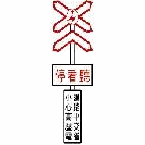
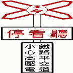
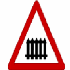
圖中標誌是碼頭堤岸、隧道、車輛故障標誌、當心自行車。
數字：—
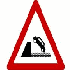
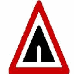
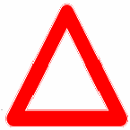
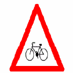
圖中標誌是禁止停車、禁止任何車輛進入、禁止四輪以上汽車進入、禁止大貨車及聯結車進入、禁止大型重型機車以外之機車進入、禁止大客車進入、禁止大客車大貨車聯結車進入。
數字：—
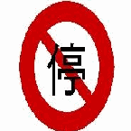
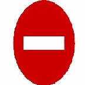
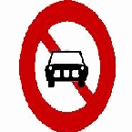
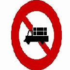
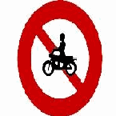
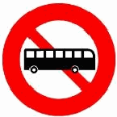
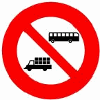
圖中標誌是省道、國道、快速公路之省道、市縣道、區鄉道路線編號。
數字：—
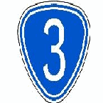
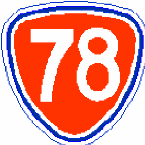
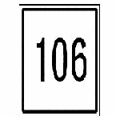
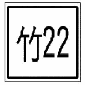
圖中標誌是停車處、人行地下道、港埠、鐵路車站、公路汽車客運車站或轉運站、車道預告、安全方向導引、車道指示。
數字：—
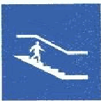
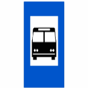
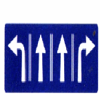
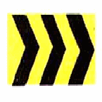
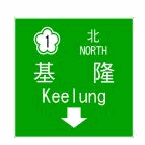
圖中標誌是車道指定大眾捷運系統車輛專行、四輪以上汽車及大型重型機車專行、大客車專行。
數字：—
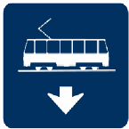
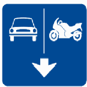
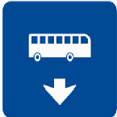
圖中標線是車輛停放線；橫向標線減速慢行；快慢車道分隔線；對角線行人穿越道線；車道縮減標線。
數字：—
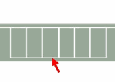
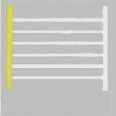
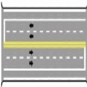
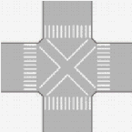
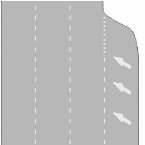
圖中號誌是特種閃光紅燈號誌。
數字：—
手勢意思：減速暫停、允讓後車超越、右轉彎、左轉彎；自行車手勢預告右轉、減速暫停。
數字：—
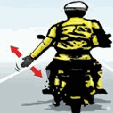
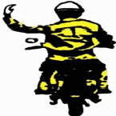
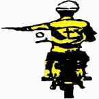
單一無分岔車道依道路線型行駛，無變換車道，不需要用方向燈。
數字：—
紅燈期間牽引機車通過停止線後繼續騎乘，視同闖紅燈；牽引在車道上仍是駕駛行為；熄火牽引進人行道停車格視同行人。
數字：—
紅燈時跨越停止線進待轉區視同違規；左轉專用車道直行綠燈時進路口停等違規；紅燈前已進路口卻臨時停車阻礙交通仍違規。
數字：—
巷道與道路形成交叉路口，十公尺內不得臨時停車；電子煙影響他人行車安全可依法舉發。
數字：10公尺
施工路段減速慢行，依標誌或引導人員指揮；變換車道不可因順暢就不打燈。
數字：—
重型機車在駕駛人後設有固定座位可附載 1人；輕型機車有固定座位得附載 1人。
數字：1人
⚠ 矛盾：M0473 說「輕型機車」有固定座位得附載 1人，但 M0121／M0007 說小型輕型機車禁止附載人員。『輕型』是否含小型輕型不明，請 Jim／Claude 判斷
普通重型機車附載物件重量以 80公斤為限。
數字：80公斤
有慢車道的單行道，機車可行駛慢車道及旁邊快車道；腳踏自行車、電動自行車是慢車。
數字：—
臨時停車不得超過 3分鐘並保持可立即行駛；車站等公共場所出入口不得停車。
數字：3分鐘
機車佔用自行車專用道，當場舉發罰鍰並記違規點數 1點。
數字：記1點